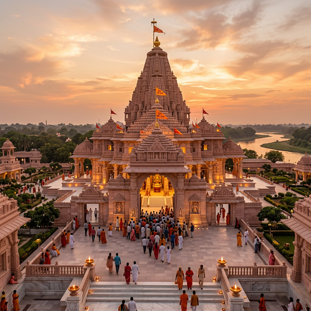
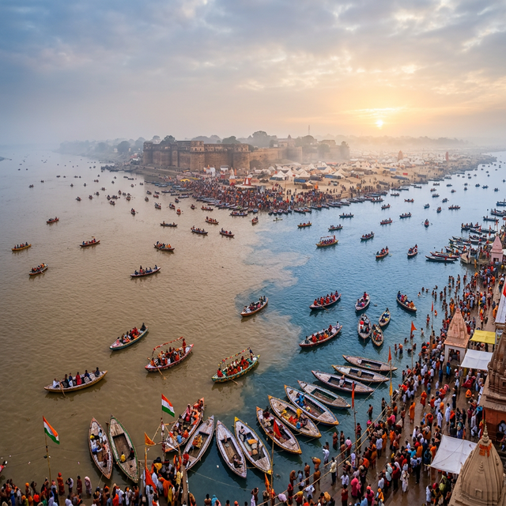
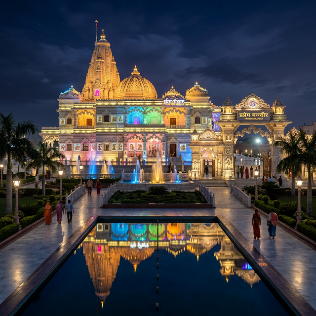
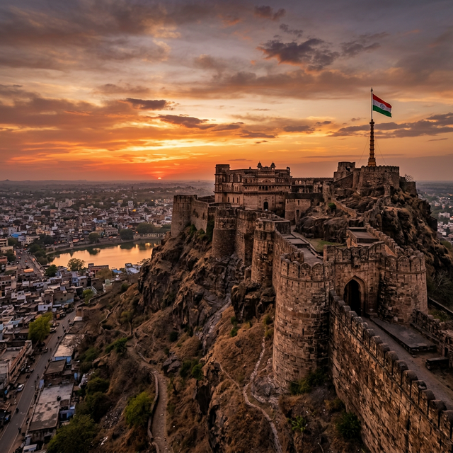
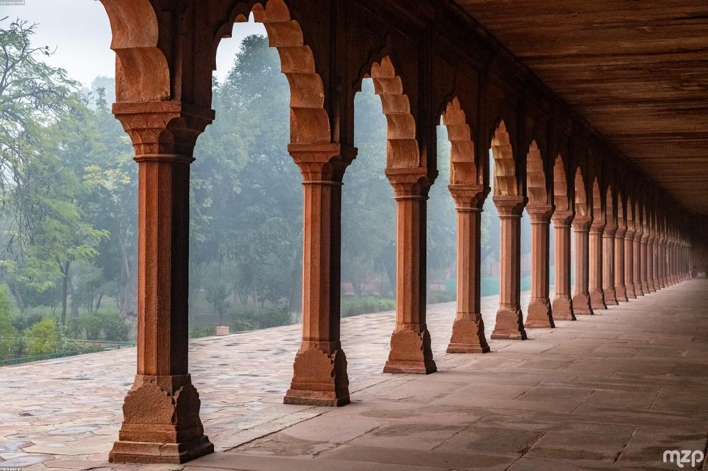

Uttar Pradesh
The cultural and spiritual heartland of India.
The cultural and spiritual heartland of India.
Discover the heritage, spirituality, and architectural marvels of Uttar Pradesh.

Home to the world-famous Taj Mahal and magnificent Mughal architecture.
Explore Agra
The oldest living city in the world, renowned for its spiritual Ghats.
Explore Varanasi
The city of Nawabs, famous for its grand monuments and exquisite cuisine.
Explore Lucknow
The birthplace of Lord Rama and a major pilgrimage center.
Explore Ayodhya
Known for the holy Triveni Sangam and the grand Kumbh Mela.
Explore Prayagraj
The sacred birthplace of Lord Krishna.
Explore Mathura
A holy town dotting with numerous ancient and modern temples.
Explore Vrindavan
Synonymous with the bravery of Rani Lakshmibai.
Explore Jhansi
A tranquil spiritual retreat surrounded by the Vindhya range.
Explore Chitrakoot
The perfectly preserved red sandstone ghost town of the Mughal Empire.
Explore Fatehpur Sikri